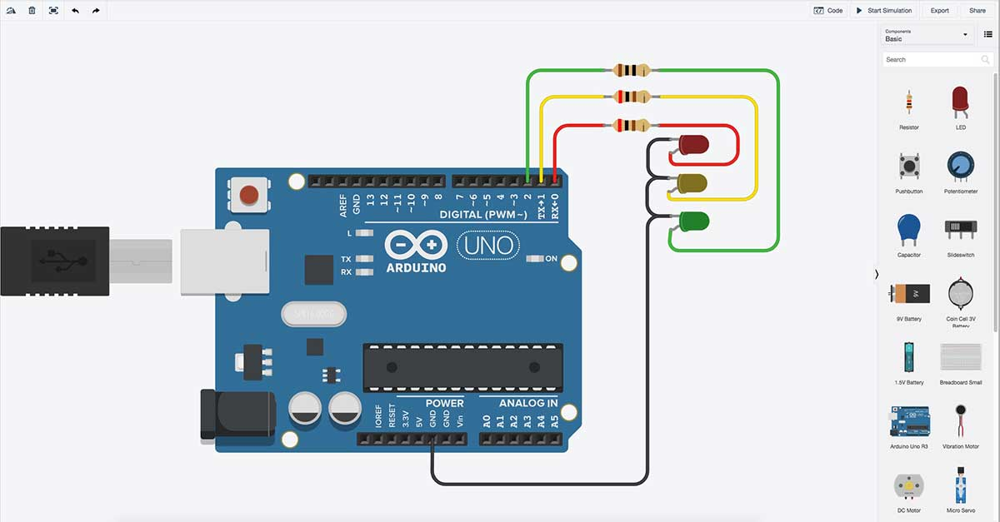

TinkerCAD
TinkerCAD es una aplicación web que nos permite introducirnos en el mundo del DIY (Do It Yourself, "hazlo tú mismo").
En ella podemos realizar diversas tareas: diseñar figuras en 3D, simular circuitos electrónicos con apariencia prácticamente real e incluso programar microcontroladores como Arduino.
Puedes acceder a esta aplicación en este enlace.
Para crear una cuenta en TinkerCAD y aprender a publicar tus primeros trabajos, puedes hacer clic en este enlace.